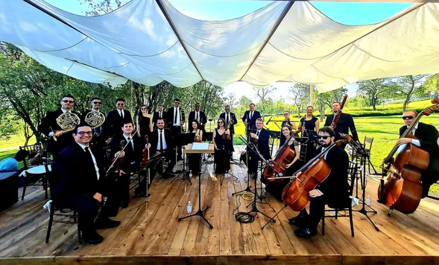

Deseja Aprender a Tocar?
Matricule-se no Instituto Musical Bravo Tatuí com professores graduados, salas acústicas climatizadas e metodologia de excelência.
Quero me Matricular / Falar no WhatsAppPiano
O piano é um instrumento musical de teclado muito versátil, utilizado em diversos estilos como música clássica, pop e jazz. Ele possui normalmente 88 teclas e funciona por meio de um mecanismo em que, ao pressionar uma tecla, um martelo interno atinge cordas que vibram e produzem o som. Pode ser encontrado em versões como o piano de cauda e o piano vertical, e se destaca por permitir tocar diferentes intensidades e combinar melodia e acompanhamento ao mesmo tempo.